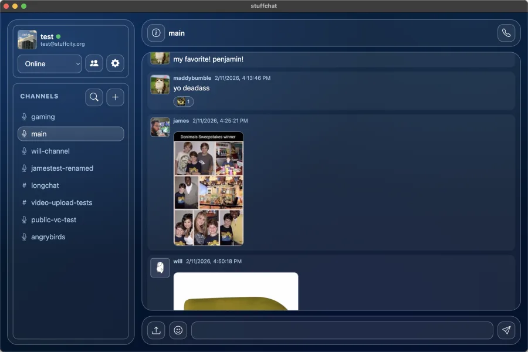
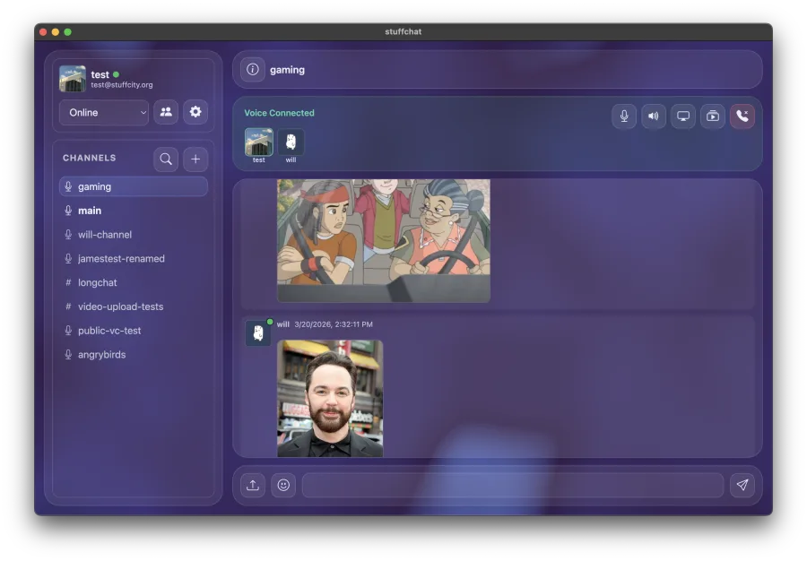
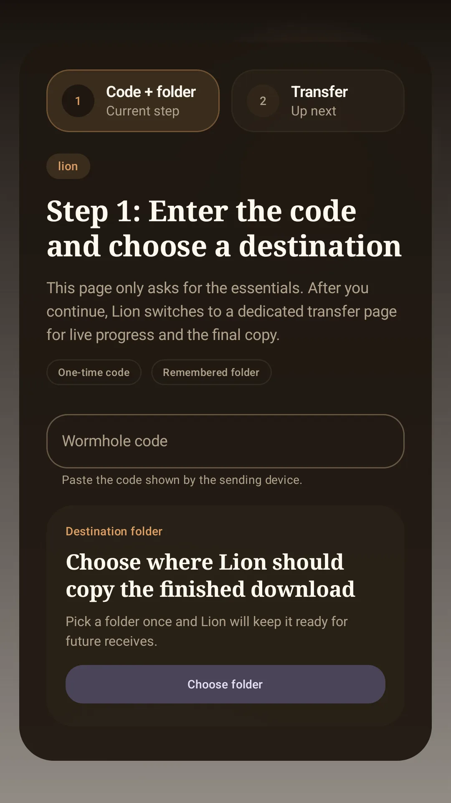
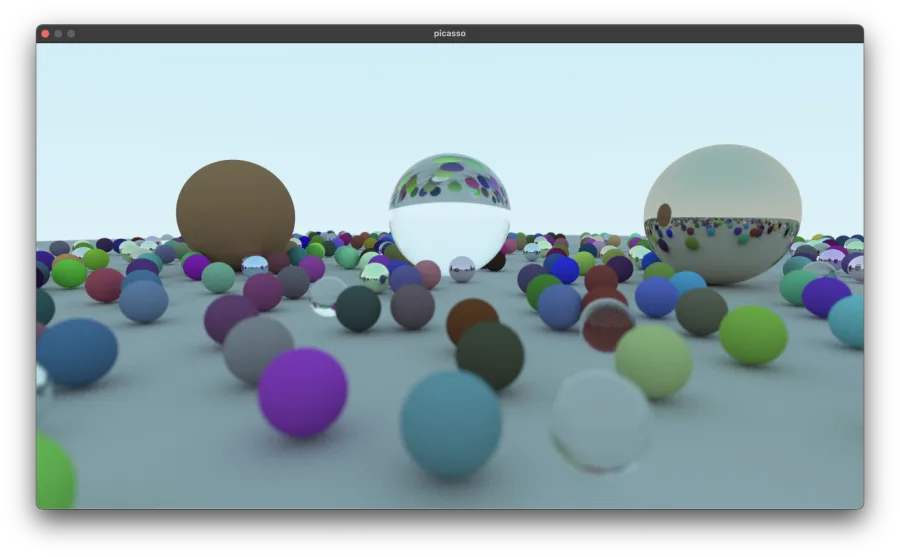
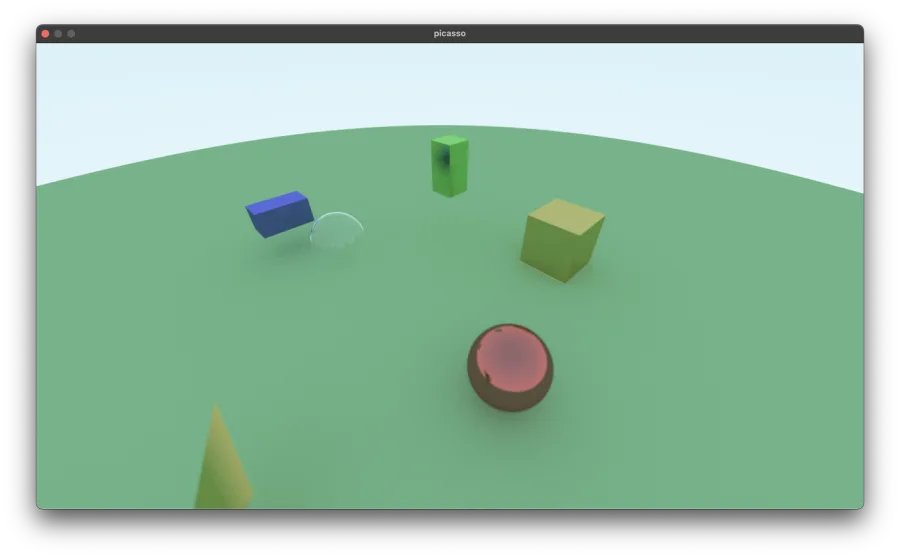

Projects
stuffchat
A self-hosted Discord/Slack-style chat app built with Rust, Actix, and SQLite. Also included in the repo is a web client, desktop client (just an electron wrapper for the web frontend) and documentation of the API. It supports public and private channels, file sharing, voice calls, multi-person screen sharing, message search, custom emojis, replies, edits, synced listening-party playlists, invites, and even iOS push notifications through an APNS relay (this last feature is invite only because I run the relay). I also wrote an iOS client (my first time using SwiftUI) which you can check out here.


Lion
An Android client for Magic Wormhole written in Kotlin. I made this to send apks and config files to my friends while setting up our AYN Thors, because we were having problems with existing apps like Croc not completing the file transfers.

Picasso (no repo)
A PBR raytracer I made in Rust. I started by following Ray Tracing in One Weekend and added multicore tiled/scanline rendering and a BVH accelerator. I'd like to reimplement the raytracer in WebGPU next so it can run in realtime with more than a few samples per pixel.

